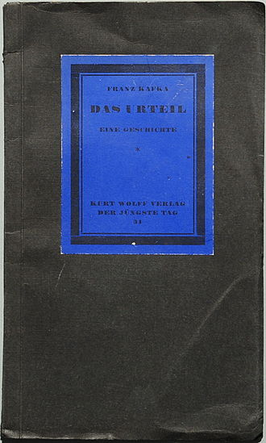

|
GENRE: Contemporary romance novel
SUMMARY:
I devoured this book in literally, no exaggeration, six hours. I spent six hours straight just eating up the content of this book. And I think it's safe to say those six hours changed my life.
This book was an EXTREMELY fast-paced read for me since I was on the edge of my seat the whole time. This book tackled the subjects of domestic abuse and gaslighting so well, and especially how hard it is to face those kinds of challenges. I highly appreciate and admire that Colleen Hoover had the courage to get up and write this novel, despite it being very personal to her and was probably extremely emotional to write. I don't only admire her for it, I'm also GLAD that she did. This novel helps raise awareness of exactly how people going through or have gone through this kind of trauma REALLY feel. The book really captures how hard it is to escape those kinds of situations. And not only that but how to identify whenever you're in one. Colleen Hoover builds up the story so that we feel every emotion that the protagonist, Lily Bloom, feels.
!Spoiler!
She structures the story specifically to get us attached to a CERTAIN CHARACTER and then breaks our hearts right after. Like Lily, we keep feeling the need to forgive Ryle for his actions because we simply just love him. And I'm glad Colleen made the choice to have Ryle and Lily separate, because it was the right thing to do, even if it's hard. For us and for them. This book is the perfect mix of dark, funny, and romantic. It broke me in all the worst ways, and yes, it did hurt. But I'm so glad I read it because I have learned so many new things. As for the book structurally: impeccable. It transitions between events in past and present really smoothly and moves the story along nicely. The dynamics between the characters were really enjoyable as well. I absolutely adored Alyssa and Lily's friendship, and Marshall was also a really great addition to that sort-of friend group thing they had going on. I also love how Colleen Hoover vaguely hints about random details we don't think much of as readers, but then that specific detail turns out to link to a huge turning point in the plot like WHOAH. Hoover really is a fantastic storyteller like that. Her use of motifs is just so page-turning. It's like everything in the novel is done so deliberately. Everything is mentioned for a reason. Something mentioned on page 12 can be a huge reveal on page 220 and you never would have guessed it. Another thing that was so entertaining was the frequency of plot twists and turns and big reveals. It didn't feel like the characters just existed to fall in love with each other, like in most romances. The plot felt very character-driven and the characters didn't feel two-dimensional or flat. It really focused on each of the character's flaws and personality traits. It Ends With Us was literally raved about everywhere, and I can definitely see why. This book just lives rent-free in my head, and I think it always will. As someone who couldn't relate to Lily's trauma whatsoever, I can still say it was an impactful read. It really sort of opened my eyes to the reality of abuse and how it SHOULD be portrayed within books and movies and whatever. Hoover is such a gifted writer, and I am so excited for the highly anticipated sequel: It Starts With Us. RATING: 4.5/5 |
GENRE: Fiction
SUMMARY:
Pride and Prejudice is an 1813 romantic novel of manners written by Jane Austen. The novel follows the character development of Elizabeth Bennet, the dynamic protagonist of the book, who learns about the repercussions of hasty judgments and eventually comes to appreciate the difference between superficial goodness and actual goodness. A classic piece filled with comedy, its humour lies in its honest depiction of manners, education, marriage and money during the Regency era in Great Britain.
Mr Bennet of Longbourn estate has five daughters, but because his property is entailed it can only be passed from male heir to male heir. Consequently, Mr Bennet's family will be destitute upon his death. Because his wife also lacks an inheritance, it is imperative that at least one of the girls marry well to support the others upon his death, which is a motivation that drives the plot. Jane Austen's opening line--"It is a truth universally acknowledged, that a single man in possession of a good fortune, must be in want of a wife"—is a sentence filled with irony and sets the tone for the book. The novel revolves around the importance of marrying for love, not simply for economic gain or social prestige, despite the communal pressure to make a good (i.e., wealthy) match.
Pride and Prejudice has consistently appeared near the top of lists of "most-loved books" among literary scholars and the reading public. It has become one of the most popular novels in English literature with over 20 million copies sold and has inspired many derivatives that abound in modern literature.[1][2] For more than a century, amateur and professional dramatic adaptations, reprints, unofficial sequels, films, and TV versions of Pride and Prejudice have portrayed the memorable characters and themes of the novel, reaching mass audiences.[3] The 2005 film Pride & Prejudice, starring Keira Knightley and Matthew Macfadyen, is the most recent film adaptation that closely represents the book, with the 2016 action, comedy, and horror spin-off Pride and Prejudice and Zombies being the most recent Hollywood film adaptation.[4]
Rating: 5/5
|
 |
|  |
GENRE: Fiction
SUMMARY:
who are familiar with the work and the eccentric genius that is Czechoslovakia's very own Franz Kafka knows about his struggles throughout his life. Somebody who struggled mentally and emotionally throughout his life, his relationship with his father was one that created an insecurity with which Kafka would live with and this was reflected within his writing. He had three sisters and both a mother and father that would outlive him (he died in 1924, his parents died in the 1930s, while his sisters died during the Holocaust), but most notably a father that would degrade his son for not meeting his expectations as being masculine enough according to his tastes. Simply put: Franz Kafka's father felt as if Franz failed him. This emotion is explored in the work that I feel does the most powerful job in describing the relationship between Kafka and his father. While "The Metamorphosis" presents a father that is hot-tempered and is perhaps the most notable work within Kafka's life, it is "The Judgment" that puts a concentration on a father that sees his son as being hopeless. The story leaves plenty of questions lingering in the head regarding the question of, "what just happened?" but one can affirm in fact that, yes, this DID just happen.
Georg Bendemann works for his father as a merchant and is spending his time writing letters to an unnamed friend of his who lives in Russia. This friend was struggling at home and made the decision to move where he was struggling even more. Some of these struggles went to the point of being physical, such as jaundice. This friend of his made the decision to remain isolated to the point that his comments were emotionless and indifferent, almost as if the distance made his heart grow colder instead of fonder to the situation. This coldness was demonstrated at the death of Georg's mother. During this time, Georg got engaged to a Frieda Brandenfeld, who objected to such a friend from attending, but the communication between Georg and the unnamed friend continues.
Why have the friend go unnamed? Perhaps this would have to do with building his reputation. To have this friend nameless creates a mysterious emotional cloud to which adds to the enigma of what is his personality. If he was given a name, one may start to build an impression, make judgments, and this would turn into an opportunity to learn much more about this individual. More than likely, Kafka only wants us to know so much about this friend. This "only knowing so much" affair was common for this author, a prime example being a complexity behind the appearance of Gregor Samsa in insect-form in "The Metamorphosis." This same approach is used to provide the reader with scarce details involving Georg's friend. We know enough about him, but not too much.
The key character and the one Kafka probably wants us to pay the most attention to is Georg's surviving father, who lost his wife in what he felt was a larger loss for him. He initially became less aggressive, but this would only be an emotion that was bottled up. He remains within the darkness of his area, which reflects his emotions to the situation. Not only has he lost his wife, but he feels that the relationship with his son is almost nonexistent.
Rating: 4/5
|